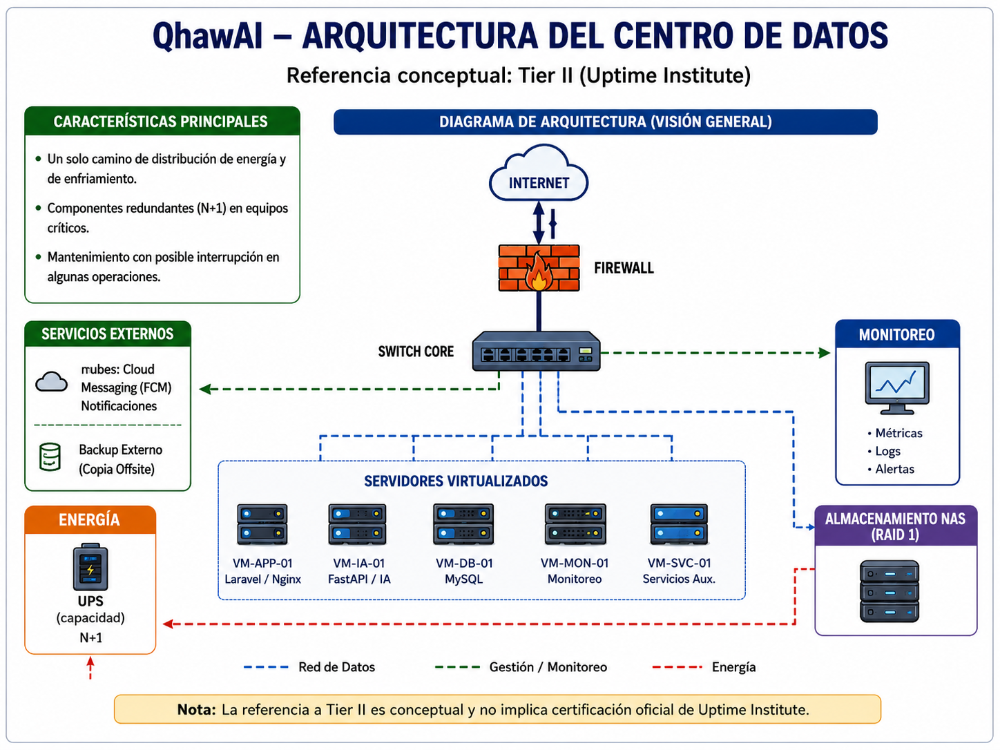
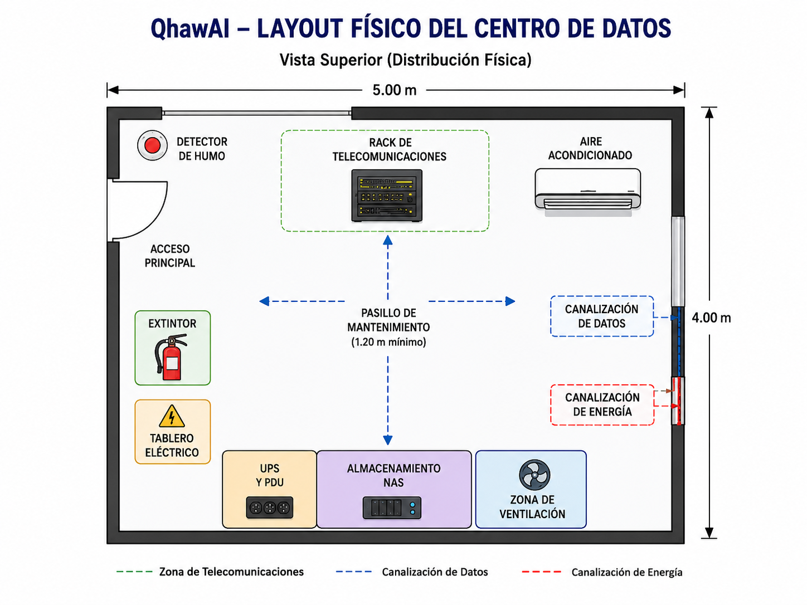
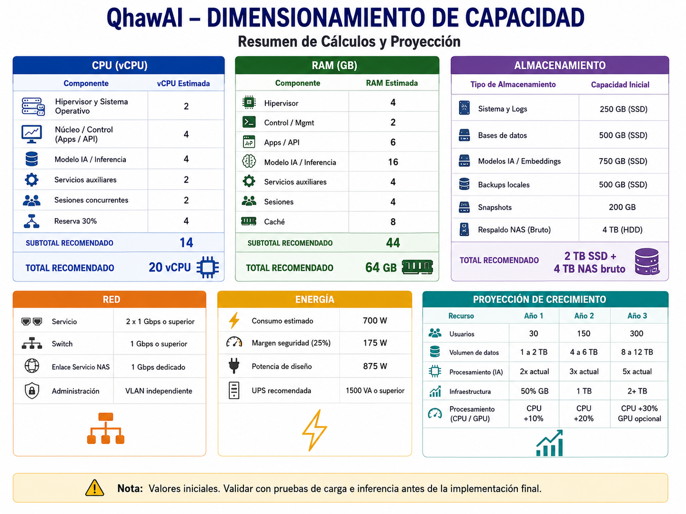
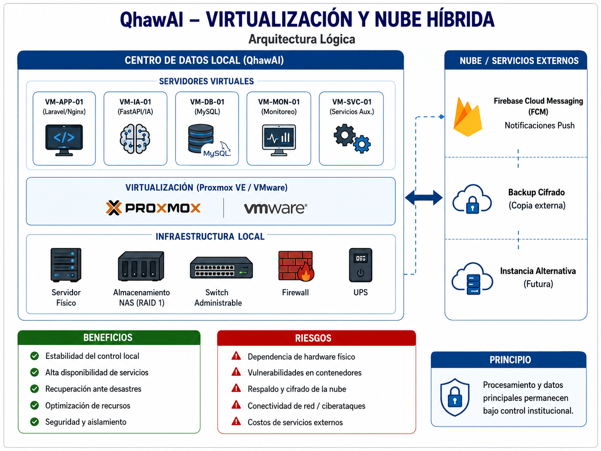
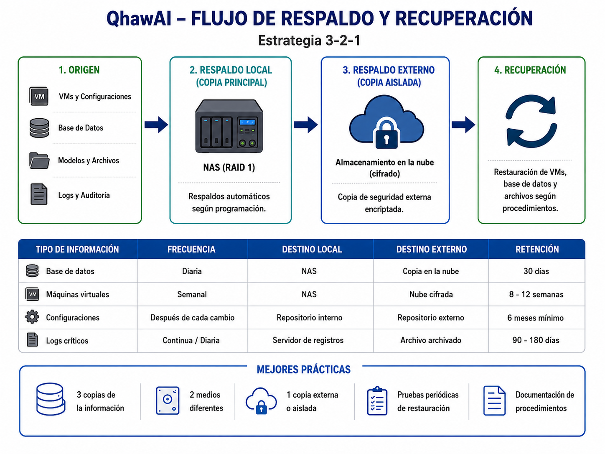

Entregable 3 — Diseño de Centro de Datos
Diseño de la arquitectura física y lógica, dimensionamiento, virtualización y modelo de nube híbrida para la infraestructura tecnológica que soportará el sistema QhawAI.
Resumen Ejecutivo
El presente entregable desarrolla el diseño de un micro centro de datos institucional destinado a soportar la operación de QhawAI, sistema inteligente de control de asistencia mediante reconocimiento facial.
La solución propuesta contempla una arquitectura local con virtualización, contenedores, almacenamiento redundante, respaldo eléctrico, monitoreo, seguridad física y una integración controlada con servicios externos. Firebase Cloud Messaging se utiliza exclusivamente para el envío de notificaciones push.
El diseño se encuentra alineado conceptualmente con principios de redundancia de componentes asociados a Tier II. Esta referencia no implica que la infraestructura posea una certificación oficial de Uptime Institute.
El dimensionamiento considera recursos de CPU, memoria RAM, almacenamiento, red, energía y crecimiento. También se plantea una arquitectura híbrida en la que el procesamiento biométrico y los datos principales permanecen bajo control institucional, mientras los respaldos cifrados y servicios complementarios pueden utilizar infraestructura externa.
1. Introducción
QhawAI requiere una infraestructura capaz de ejecutar servicios web, procesamiento de inteligencia artificial, base de datos, monitoreo, almacenamiento y mecanismos de respaldo.
Debido a que el sistema procesa datos personales y biométricos, el centro de datos debe proporcionar disponibilidad, seguridad física, segregación de servicios, trazabilidad y capacidad de recuperación.
El diseño propuesto corresponde a una infraestructura académica escalable. Las capacidades definitivas deberán validarse mediante pruebas reales de carga, inferencia y concurrencia.
2. Objetivos del Diseño
2.1 Objetivo general
Diseñar un centro de datos seguro, escalable y disponible para soportar los servicios tecnológicos del sistema QhawAI en una institución educativa.
2.2 Objetivos específicos
3. Requerimientos y Supuestos de Diseño
| ID | Requerimiento | Prioridad | Criterio de diseño |
|---|---|---|---|
| RC-01 | Ejecutar Laravel, FastAPI, MySQL, Nginx y monitoreo. | Crítica | Separación lógica mediante máquinas virtuales o contenedores. |
| RC-02 | Mantener los datos biométricos bajo control institucional. | Crítica | Procesamiento local y acceso restringido. |
| RC-03 | Soportar una interrupción eléctrica breve. | Alta | UPS y apagado controlado. |
| RC-04 | Permitir recuperación ante fallas. | Alta | Backups, snapshots y procedimientos de restauración. |
| RC-05 | Permitir crecimiento de usuarios y ambientes. | Alta | Reserva de CPU, RAM, almacenamiento y espacio de rack. |
| RC-06 | Monitorear recursos y eventos de infraestructura. | Alta | Plataforma de métricas, logs y alertas. |
| RC-07 | Proteger físicamente los equipos. | Alta | Rack cerrado, control de acceso y registro de ingreso. |
3.1 Escenarios de crecimiento
| Escenario | Ambientes | Dispositivos de captura | Usuarios estimados | Descripción |
|---|---|---|---|---|
| Piloto | 1 | 1 | 30 | Validación inicial y pruebas funcionales. |
| Intermedio | 5 | 5 | 150 | Ampliación a varios ambientes. |
| Proyectado | 10 | 10 | 300 | Operación institucional ampliada. |
4. Definición de Arquitectura
4.1 Comparación de niveles Tier
| Nivel | Características generales | Ventaja | Limitación | Decisión |
|---|---|---|---|---|
| Tier I | Ruta única y componentes sin redundancia. | Bajo costo. | Mayor dependencia de componentes individuales. | No seleccionado. |
| Tier II | Ruta principal con componentes de capacidad redundantes. | Equilibrio entre costo, continuidad y complejidad. | Algunos mantenimientos pueden generar interrupción. | Referencia seleccionada. |
| Tier III | Infraestructura mantenible concurrentemente. | Mayor disponibilidad y mantenimiento planificado. | Mayor inversión y complejidad. | Posible evolución futura. |
| Tier IV | Infraestructura tolerante a fallos. | Máxima resiliencia. | Costo y complejidad excesivos para el alcance. | No seleccionado. |
4.2 Arquitectura seleccionada
Se selecciona una arquitectura alineada conceptualmente con principios Tier II, debido a que proporciona redundancia en componentes esenciales sin alcanzar el costo y complejidad de una infraestructura Tier III o Tier IV.
La selección considera el alcance académico, el crecimiento progresivo, la necesidad de respaldo eléctrico, almacenamiento redundante, monitoreo y recuperación.

4.3 Componentes principales
| Componente | Función | Redundancia propuesta |
|---|---|---|
| Servidor de virtualización | Alojar máquinas virtuales y contenedores. | Backups, snapshots y nodo alternativo futuro. |
| Almacenamiento NAS | Backups, repositorio y recuperación. | RAID 1 o equivalente. |
| Switch administrable | Conectividad, VLAN y comunicación interna. | Configuración respaldada y equipo sustituto. |
| Firewall | Protección perimetral y control de comunicaciones. | Backup de configuración y equipo alternativo futuro. |
| UPS | Continuidad eléctrica y apagado controlado. | Capacidad dimensionada con margen de seguridad. |
| Monitoreo | Métricas, logs, alertas y disponibilidad. | Registros enviados a repositorio separado. |
5. Diseño del Layout Físico
El centro de datos se plantea como una sala técnica o micro centro de datos con acceso restringido, rack cerrado, energía protegida, separación de canalizaciones y espacio de mantenimiento.

5.1 Zonas del ambiente
5.2 Elevación del rack

| Ubicación | Equipo | Justificación |
|---|---|---|
| Parte superior | Patch panel y organizadores | Facilita terminación, identificación y distribución. |
| Zona superior media | Switch administrable | Reduce recorridos de cableado. |
| Zona media | Firewall y equipo de gestión | Facilita administración y conexión. |
| Zona central | Servidor de virtualización | Espacio ventilado y acceso frontal/posterior. |
| Zona inferior media | NAS o almacenamiento | Distribución de peso y cercanía al servidor. |
| Parte inferior | UPS | Mayor estabilidad por su peso. |
5.3 Condiciones físicas
| Condición | Medida propuesta | Evidencia esperada |
|---|---|---|
| Temperatura y humedad | Monitoreo ambiental y ventilación adecuada. | Lecturas y alertas. |
| Acceso físico | Cerradura, autorización y registro de ingreso. | Bitácora de accesos. |
| Incendio | Detección de humo y extintor apropiado. | Inspección y señalización. |
| Energía | UPS, puesta a tierra y distribución mediante PDU. | Diagrama eléctrico. |
| Cableado | Separación física de datos y energía. | Plano de canalización. |
| Polvo y humedad | Ambiente cerrado, limpieza y mantenimiento. | Registro de mantenimiento. |
6. Dimensionamiento de Capacidad
Los valores presentados corresponden a una propuesta inicial. Deberán ajustarse después de ejecutar pruebas reales de inferencia, concurrencia y consumo de recursos.

6.1 Dimensionamiento de CPU
CPU requerida = Sistema operativo + virtualización + servicios web + inteligencia artificial + base de datos + monitoreo + margen de crecimiento
| Servicio | vCPU estimada | Observación |
|---|---|---|
| Hipervisor y sistema base | 2 | Gestión y tareas del host. |
| Nginx y Laravel | 2 | API, lógica y solicitudes web. |
| FastAPI e inferencia | 4 | Puede requerir GPU según concurrencia. |
| MySQL | 2 | Consultas, índices y caché. |
| Monitoreo y logs | 2 | Métricas, alertas y registros. |
| Servicios auxiliares | 2 | Backups, automatización y gestión. |
| Subtotal | 14 | Demanda inicial proyectada. |
| Reserva de crecimiento | 30 % | Aproximadamente 4 a 6 vCPU adicionales. |
| Capacidad recomendada | 20 vCPU aproximadas | Servidor físico de 12 núcleos / 24 hilos o equivalente. |
6.2 Dimensionamiento de RAM
| Componente | RAM estimada | Justificación |
|---|---|---|
| Hipervisor | 4 GB | Gestión del host. |
| Laravel y Nginx | 6 GB | Aplicación y procesos web. |
| FastAPI e IA | 16 GB | Modelos, imágenes temporales e inferencia. |
| MySQL | 8 GB | Caché, consultas e índices. |
| Monitoreo y logs | 6 GB | Dashboards, métricas y eventos. |
| Servicios auxiliares | 4 GB | Backups, DNS y administración. |
| Subtotal | 44 GB | Asignación inicial. |
| Reserva | 20 GB | Crecimiento y picos. |
| RAM recomendada | 64 GB | Permite crecimiento y reasignación. |
6.3 Dimensionamiento de almacenamiento
Almacenamiento total = Sistema y máquinas virtuales + base de datos + modelos y archivos temporales + logs + snapshots + respaldos + margen de crecimiento
| Uso | Capacidad inicial | Tipo recomendado |
|---|---|---|
| Sistema e hipervisor | 250 GB | SSD NVMe. |
| Máquinas virtuales | 500 GB | SSD NVMe. |
| Base de datos | 150 GB | SSD con respaldo. |
| Modelos y archivos temporales | 250 GB | SSD. |
| Logs y auditoría | 200 GB | SSD o almacenamiento secundario. |
| Snapshots | 300 GB | Almacenamiento local controlado. |
| Backups locales | 2 TB útiles | NAS con RAID 1 o equivalente. |
| Propuesta | 2 TB SSD + 4 TB NAS bruto | Aproximadamente 2 TB utilizables con redundancia. |
6.4 Dimensionamiento de red
| Componente | Capacidad propuesta | Justificación |
|---|---|---|
| Servidor principal | 2 interfaces de 1 Gbps o superior | Separación de gestión y tráfico de servicios. |
| Switch central | 1 Gbps por puerto | Capacidad suficiente para el escenario inicial. |
| Enlace servidor–almacenamiento | 1 o 10 Gbps | Reduce tiempos de backup y restauración. |
| Administración | VLAN independiente | Aislamiento de consolas y acceso técnico. |
6.5 Capacidad eléctrica y UPS
| Equipo | Consumo estimado |
|---|---|
| Servidor | 450 W |
| NAS | 80 W |
| Switch | 60 W |
| Firewall | 30 W |
| Monitoreo y auxiliares | 80 W |
| Consumo estimado | 700 W |
| Margen de seguridad de 25 % | 175 W |
| Potencia de diseño | 875 W |
Se propone una UPS de aproximadamente 1500 VA o superior. La autonomía final deberá calcularse utilizando la curva de carga del fabricante y deberá permitir continuidad breve o apagado controlado.
6.6 Proyección de crecimiento
| Recurso | Año 1 | Año 2 | Año 3 |
|---|---|---|---|
| Usuarios | 30 | 150 | 300 |
| Dispositivos de captura | 1 | 5 | 10 |
| RAM asignada | 32–44 GB | 48 GB | 64 GB o expansión |
| Almacenamiento operativo | 500 GB | 1 TB | 2 TB |
| Procesamiento | CPU | CPU optimizada | CPU + GPU según pruebas |
7. Virtualización y Nube Híbrida

7.1 Plataforma de virtualización
El servidor físico podrá utilizar Proxmox VE, VMware o una plataforma equivalente. La selección final dependerá del licenciamiento, conocimiento técnico y capacidades disponibles.
| Máquina virtual | Servicio | Recursos iniciales | Red |
|---|---|---|---|
| VM-APP-01 | Nginx y Laravel | 2–4 vCPU / 6 GB RAM | Servidores / DMZ controlada |
| VM-IA-01 | FastAPI e inteligencia artificial | 4–8 vCPU / 16 GB RAM | Red interna de servidores |
| VM-DB-01 | MySQL | 2–4 vCPU / 8 GB RAM | Red interna de datos |
| VM-MON-01 | Monitoreo, logs y alertas | 2–4 vCPU / 6 GB RAM | VLAN de monitoreo |
| VM-SVC-01 | Servicios auxiliares | 2 vCPU / 4 GB RAM | Gestión o servicios |
7.2 Uso de contenedores
Docker podrá utilizarse dentro de las máquinas virtuales para aislar servicios, simplificar despliegues y facilitar la recuperación.
7.3 Modelo de nube híbrida
| Componente | Local | Nube o servicio externo |
|---|---|---|
| Procesamiento facial | Sí | No requerido. |
| Base de datos principal | Sí | Solo respaldo cifrado. |
| Laravel y FastAPI | Sí | Instancia alternativa futura. |
| Notificaciones push | No | Firebase Cloud Messaging. |
| Backups | Copia principal en NAS | Copia cifrada externa. |
| Reportes anonimizados | Sí | Sincronización controlada. |
7.4 Beneficios y riesgos
| Aspecto | Beneficio | Riesgo | Control |
|---|---|---|---|
| Virtualización | Mejor utilización de recursos. | Dependencia del host físico. | Backup y recuperación. |
| Snapshots | Reversión rápida. | Consumo de almacenamiento. | Retención limitada. |
| Contenedores | Despliegue reproducible. | Imágenes vulnerables. | Escaneo y actualización. |
| Nube híbrida | Recuperación y escalabilidad. | Exposición de respaldos. | Cifrado y control de acceso. |
| Firebase FCM | Notificaciones administradas. | Compromiso de tokens. | Protección de credenciales. |
8. Respaldo y Recuperación

| Información | Frecuencia | Destino local | Destino externo | Retención |
|---|---|---|---|---|
| Base de datos | Diaria | NAS | Copia cifrada | 30 días |
| Máquinas virtuales | Semanal | NAS | Mensual cifrada | 8–12 semanas |
| Configuraciones | Después de cada cambio | Repositorio interno | Copia cifrada | Últimas versiones |
| Logs críticos | Continua o diaria | Servidor de monitoreo | Archivo protegido | 90–180 días |
9. Cumplimiento de Estándares
| Estándar o marco | Aplicación en el proyecto | Evidencia prevista |
|---|---|---|
| Uptime Institute Tier Standard | Referencia para disponibilidad y redundancia. | Justificación de arquitectura. |
| TIA-942 | Espacios, cableado, energía y telecomunicaciones. | Layout y elevación del rack. |
| ISO/IEC 22237 | Diseño y operación de instalaciones de centro de datos. | Matriz de cumplimiento. |
| ISO/IEC 27001 | Gestión de seguridad de la información. | Controles de acceso y protección. |
| ISO/IEC 27002 | Controles de seguridad física y lógica. | Políticas y medidas. |
| ISO/IEC 11801 | Cableado genérico de telecomunicaciones. | Diseño de cableado. |
| TIA/EIA-568 | Cableado estructurado. | Patch panel y conexiones. |
| TIA-606 | Etiquetado de puertos, racks y cables. | Inventario y codificación. |
| ASHRAE TC 9.9 | Referencia para condiciones ambientales. | Monitoreo de temperatura y humedad. |
| Código de Ética ACM | Privacidad, responsabilidad y prevención de daños. | Declaración ética. |
10. Calidad Documental y Ética ACM
El centro de datos debe proteger la información biométrica, restringir el acceso y evitar usos diferentes a la finalidad informada.
11. Conclusiones
La arquitectura propuesta proporciona una base escalable para soportar los servicios de QhawAI mediante virtualización, almacenamiento redundante, monitoreo y respaldo eléctrico.
El diseño alineado conceptualmente con Tier II representa una alternativa equilibrada entre disponibilidad, costo y complejidad para el alcance del proyecto.
El modelo de nube híbrida mantiene el procesamiento biométrico y la base de datos principal bajo control institucional, utilizando servicios externos únicamente para funciones autorizadas como notificaciones y respaldos cifrados.
El dimensionamiento deberá validarse mediante pruebas reales antes de adquirir o implementar la infraestructura definitiva.
12. Referencias y Marcos Utilizados
| Referencia | Uso dentro del diseño |
|---|---|
| Uptime Institute | Clasificación y principios Tier. |
| TIA-942 | Infraestructura física de centro de datos. |
| ISO/IEC 22237 | Instalaciones y operación de centros de datos. |
| ISO/IEC 27001 y 27002 | Seguridad física y lógica. |
| ISO/IEC 11801 | Cableado genérico. |
| ASHRAE TC 9.9 | Condiciones ambientales. |
| Código de Ética ACM | Privacidad y responsabilidad profesional. |
13. Anexos
| Anexo | Descripción | Archivo | Estado |
|---|---|---|---|
| Anexo A | Arquitectura Tier propuesta | e3-arquitectura-tier-qhawai.png | Pendiente de generar |
| Anexo B | Layout físico | e3-layout-fisico-qhawai.png | Pendiente de generar |
| Anexo C | Elevación del rack | e3-elevacion-rack-qhawai.png | Pendiente de generar |
| Anexo D | Dimensionamiento | e3-dimensionamiento-capacidad-qhawai.png | Pendiente de generar |
| Anexo E | Virtualización y nube híbrida | e3-virtualizacion-cloud-hibrido-qhawai.png | Pendiente de generar |
| Anexo F | Flujo de respaldo | e3-flujo-backup-qhawai.png | Pendiente de generar |
| Anexo G | Cálculos de CPU, RAM y almacenamiento | Incluidos en el entregable | Desarrollados |
| Anexo H | Matriz de estándares | Incluida en el entregable | Desarrollada |
Verificación de la Rúbrica CE0331
| Criterio | Evidencia desarrollada | Estado |
|---|---|---|
| Definición de arquitectura Tier | Comparación Tier I–IV y justificación de Tier II conceptual. | Desarrollado |
| Diseño de layout físico | Zonas, rack, energía, cableado y seguridad física. | Pendiente de imágenes |
| Dimensionamiento de capacidad | Cálculos de CPU, RAM, almacenamiento, red y energía. | Desarrollado |
| Virtualización y nube híbrida | Máquinas virtuales, contenedores, beneficios y riesgos. | Desarrollado |
| Cumplimiento de estándares | Uptime, TIA-942, ISO/IEC 22237, ISO 27001 y otros. | Desarrollado |
| Calidad documental y ética | Estructura profesional y principios ACM. | Desarrollado |